Price and approve a change order
In the office app, press Help and type price and approve a change order
: the tour plays on your own screen, with your own data.
-
 1
1Open the job
Change orders live on the job. Let's open one.
-
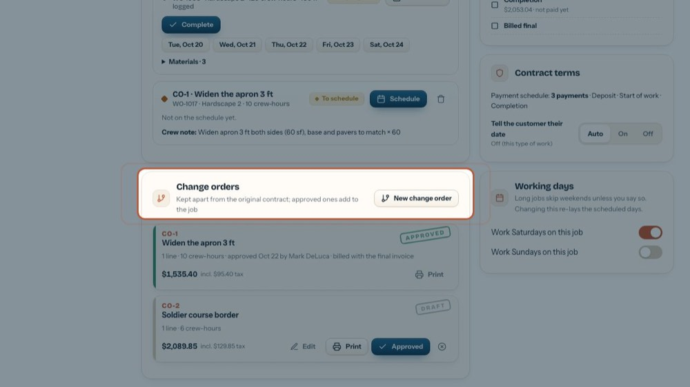
2Change orders
Extra work the customer asks for, each priced and signed on its own and kept apart from the original contract.
-
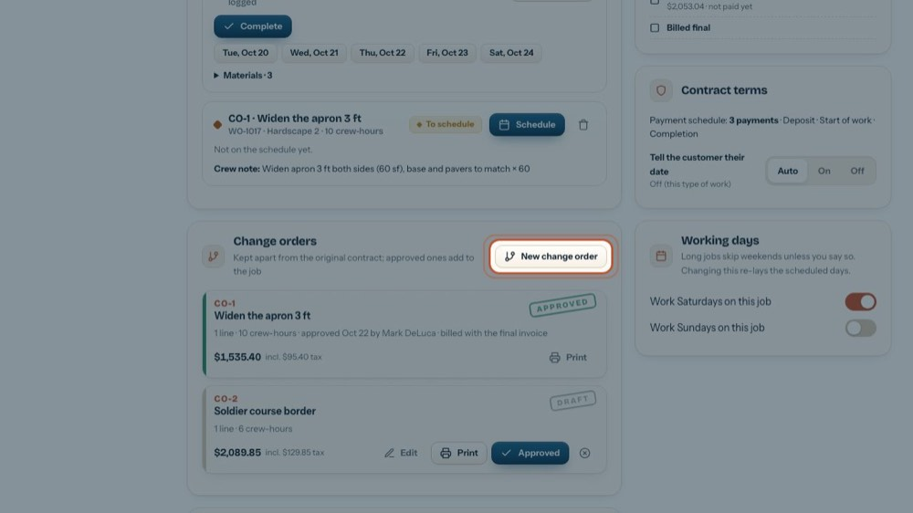
3Start one
New change order starts a draft on this job straight away (CO-1, CO-2 …), ready to fill in. The tour doesn't press it.
-
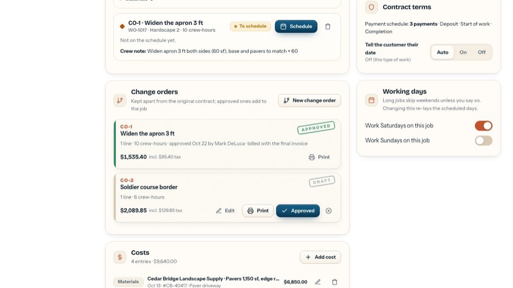
4An approved one
The stamp shows its state: Draft, With customer, Approved or Declined. Then the lines, crew-hours, who approved it and how it is billed.
-
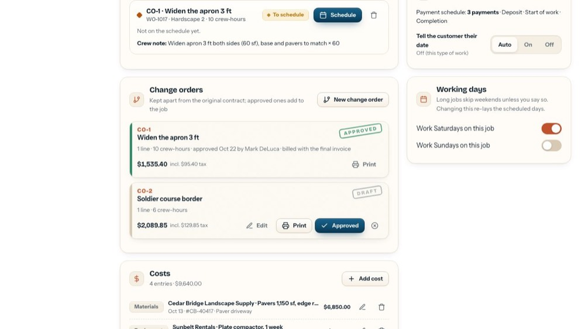
5Print it
Prints the approved change order. If it was billed on its own invoice, a button opens that invoice.
-
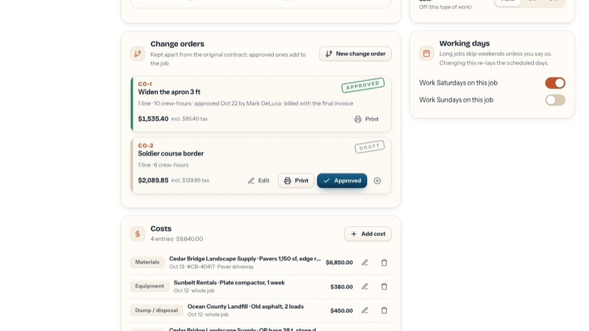
6A draft
A draft, or one with the customer, can still change: Edit, Print, Approved, and the x for declined.
-
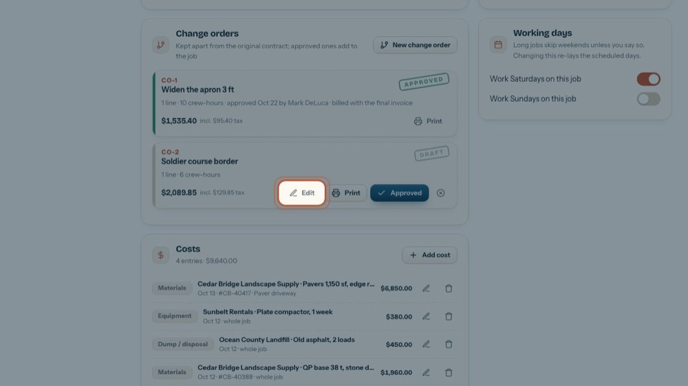
7Edit
Opens it to write the lines.
-
8
Title
A short name the customer understands, e.g. Patio extension.
-
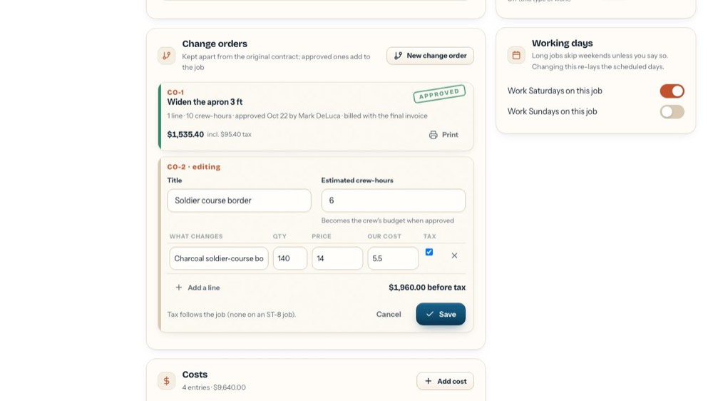
9Estimated crew-hours
Becomes the crew's hour budget on the work item once it is approved.
-
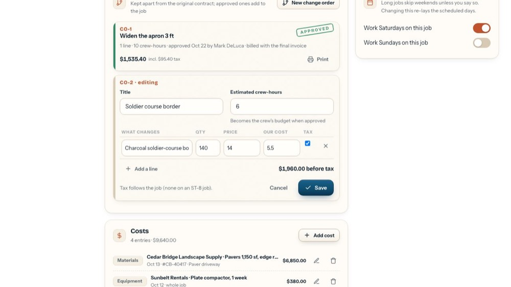
10The lines
What changes, quantity, price, your cost (never shown to the customer) and the Tax tick. The x removes a line; the total before tax is under it.
-
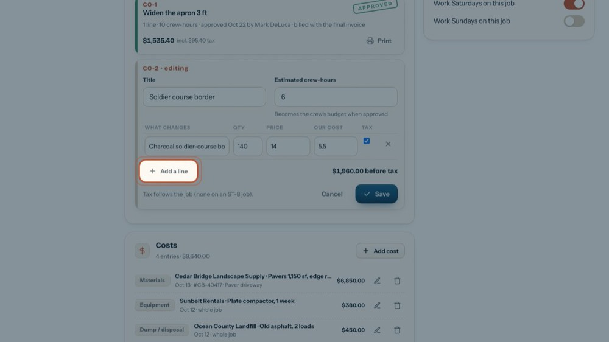
11Add a line
Adds another line.
-
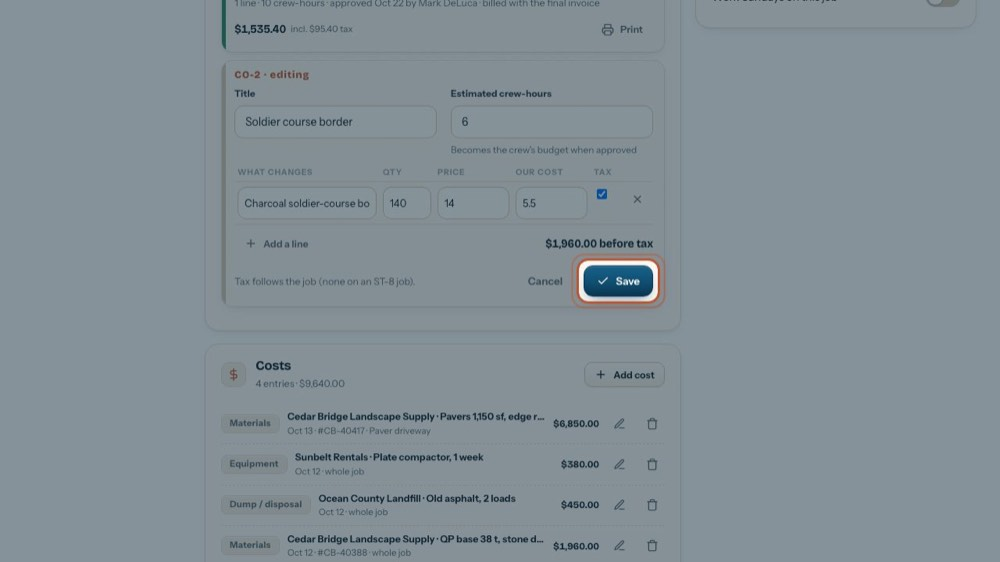
12Save it
Saves the lines. Tax follows the job (none on an ST-8 job). The tour doesn't press it.
-
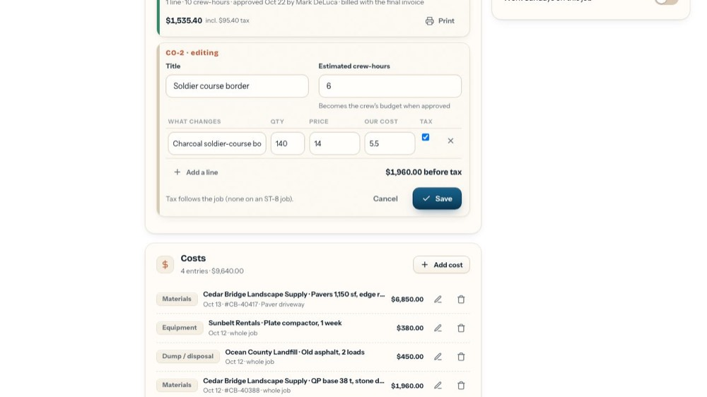
13Close without saving
Cancel closes the editor.
-
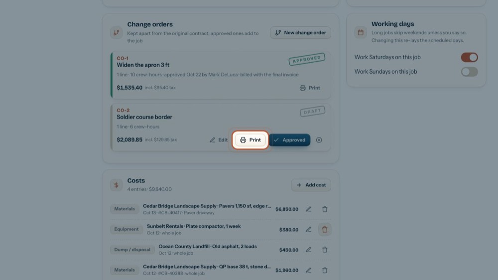
14Give it to the customer
Print prints it and marks it "With customer".
-
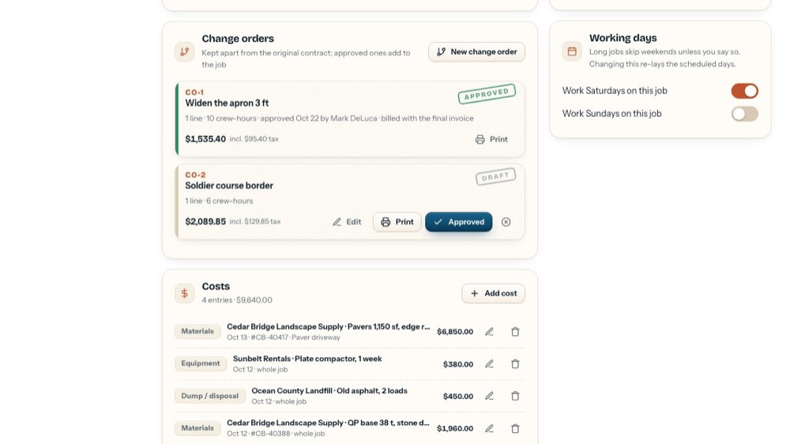
15The customer agreed
Approved asks who approved it and how to bill it: with the final invoice, now on its own invoice, in the final payment or spread over the payments left.
-
 16
16The customer said no
Marks it Declined (it asks first). It stays on the job; a declined one can be deleted.
-
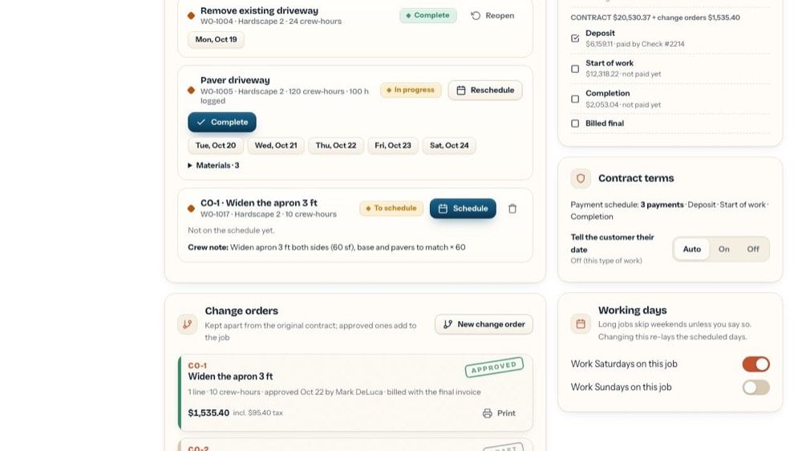
17It becomes work
Once approved it is a CO work item with its own hours, scheduled like any other work. Its price adds to the job. You can attach the signed copy when approving.